Vanderbilt · Learning Series · ATD facilitator guide · print edition
The Transfer Portal, the facilitator guide

Run of show
| Screen | Full (min) | Core (min) |
|---|---|---|
| Welcome / QR | 1 | 1 |
| Objectives | 1 | — |
| The chancellor's charge | 1 | — |
| 01 · What it is | 1 | 1 |
| 02 · Six entrances | 2 | 1 |
| 03 · The process | 2 | 1 |
| 04 · The culture shift | 3 | 2 |
| 05 · The evidence | 1 | 1 |
| Recap quiz | 1 | 1 |
| Job aid · Five moves | 1 | 1 |
| Closing · commitment | 1 | 1 |
| Total | 15 | 10 |
Audience
All Vanderbilt staff and their managers. Designed as a 15-minute experience: a team huddle, the top of a staff meeting, or a self-paced quarter hour. Works at any size; no prerequisites.
Room setup
Projector plus presenter device; learners on their own devices via the Welcome-slide QR; movable seating for pairs. Virtual: breakouts of 2 for the pair activities. This session touches real career hopes: establish early that nothing typed in the course is saved or sent, and that the portal itself is private by default. If HR leadership attends, brief them beforehand that the tough questions section may surface real policy questions to take away.
Materials
- Projector or large display and the facilitator link open (this edition)
- Facilitator laptop with arrow keys or clicker; all notifications off
- Learner devices (BYOD) joining via the welcome-slide QR
- A few printed quick reference cards (cheatsheet.html) for anyone without a device
- Printed first move cards (worksheet.html) as the no-device and projector-failure fallback
- Whiteboard or flip chart for the parking lot and collected open questions for HR
- The current Transfer Portal launch timeline and support contacts from People, Culture and Belonging, so you can answer 'when' and 'who do I call'
A week before
- Read this guide end to end, then run BOTH editions start to finish, doing every exercise, including building your own first move card. You will be asked whether you have used the portal yourself; a real answer plays better than a deflection.
- Confirm the current state of the actual Transfer Portal rollout with People, Culture and Belonging: what is live, what is coming, and who staff contact for help. Write those three facts where you can reach them mid-session.
- Send the pre-work invite (template on this page) with the calendar invite: come with one honest career curiosity, held privately.
- Decide your slot now: the full 15 minutes or the 10-minute squeeze. Mark your cuts from the coreNotes.
- If your audience is heavily managers, re-read Section 04 twice; it is the session's center of gravity for them, and the tough-questions bank leans that way.
The day before
- Test the projector with the facilitator link; confirm the notes rail is readable from where you'll stand.
- Scan the welcome QR from the back of the room with your own phone; it must land on the learner edition.
- Run every trainer once so no reveal surprises you, especially Judge the Response; you want the two guardrail items ready in your own words.
- Print 5 to 10 quick reference cards and first move cards.
- Re-read the tough-questions bank; say the 'so my manager can see everything I do in there?' answer out loud once.
30 minutes before
- Welcome slide up as people arrive; it does the enrolling for you.
- Close every other tab and app; silence the machine.
- Test arrow-key navigation and one interaction (run a round of Fact or Fiction).
- Arrange seating so pairs can form without furniture-moving theater; mixed manager and staff pairs are gold if the room allows.
- Write 'PARKING LOT' and 'OPEN QUESTIONS FOR HR' on the whiteboard where the room can see them.
When things go sideways
If Projector or the site fails mid-session: Teach from the printed quick reference: the guarantees, the six entrances, the two tracks, and the manager script all work on a whiteboard. The pair activities never needed a screen; the capstone moves to the printed card.
If Learner devices can't join (wifi or filters): Run facilitator-only: the trainers play well on the projector with the room voting A/B/C by hands, and the capstone moves to paper. You lose typing, not learning.
If You're running behind by the culture section (04): Declare the squeeze silently: remaining trainers become single room votes. Never cut Section 04's trainer, the recap, or the capstone; they carry the program's success.
If Someone shares a live, painful situation, a role elimination or a conflict with their manager: Honor it and bound it: 'That's real, and you deserve a better answer than a training room can give. Entrance E and the employee-consultant conversation exist for exactly this; let's connect after.' Follow up privately with the People, Culture and Belonging contact you prepped. Keep names off the whiteboard.
If A manager pushes back hard: 'so HR built a tool to raid my team': Don't argue; go to evidence. Ask them what it costs to backfill an external departure, then show the retention numbers and the hoarding research: the choice is between losing people to another Vanderbilt unit or to another employer. Then land the backfill cascade: their next great hire comes through the same portal.
If The room distrusts the privacy claims ('HR always says that'): Slow down and be concrete: interest declarations trigger no notifications, data reaches leaders only aggregated through Workforce Intelligence, and asking HR to work around that is itself a violation managers are trained on. Then write the residual doubts on the open-questions board and commit to written answers; skeptics convert on follow-through, not reassurance.
Tough questions, ready answers
Q: So my manager can see everything I do in there?
No. Your browsing, your Careers of Interest, and your skills profile are private to you. Your manager gets no notification when you declare interest, and leader-facing Workforce Intelligence shows aggregated, privacy-preserving data, never a list of who is looking. Your manager learns you applied for a role when you tell them or when the hiring process formally requires it, and the norm is that you have that conversation yourself once you are a serious candidate.
Q: Isn't this just poaching with extra steps?
Poaching is secret and zero-sum. This is the opposite on both counts: the marketplace is open to every unit, the releasing manager gets a planned handoff and a backfill through the same system, and the alternative to an internal move is usually an external resignation, which has no handoff and no backfill window. The research backs it: about 75% of managers admit to talent hoarding, and hoarding deters internal applications without stopping external ones (Haegele, American Economic Review, 2024).
Q: If I take a Gig and do great work, why doesn't that guarantee me the permanent role?
Because the Gig is development and the requisition is a competition, and keeping them separate protects you both ways. If Gigs converted automatically, every Gig would become a quiet audition and managers would guard them like headcount. Kept separate, you can stretch without betting your reputation, and when the real requisition opens, your Gig gives you evidence, relationships, and a warm start most candidates won't have.
Q: What if my manager retaliates anyway?
Then the program's integrity rules are on your side: blocking an application, downgrading a rating in response, or excluding someone from key work are named as serious violations, and managers are trained on that before the portal reaches them. Document what happened and bring it to your HR business partner or an employee consultant. And a candid note: the guardrails only bite because leadership enforces them, which is exactly why manager training like this session exists.
Q: Why would I tell the truth about my skill levels? Inflating them gets me matched to better roles.
It gets you matched to interviews you then lose. The hiring manager verifies skills in the interview, and an inflated profile spends your credibility exactly where you need it most. Honest levels do something better: they route you to roles and Gigs where you'll genuinely compete, and they turn the gaps into Grow goals instead of surprises.
Q: We're short-staffed already. How is my unit supposed to survive its best people leaving?
Two honest answers. First, the counterfactual: your best people already have a marketplace; it's called every other employer, and it offers no handoff, no knowledge transfer, and no internal-first backfill. The portal keeps that talent at Vanderbilt and gives you two to four weeks of coordinated transition plus first look at internal candidates for the backfill. Second, the pattern compounds: units known for developing and releasing people attract the strongest internal applicants, so the pipeline runs both directions.
Copy-paste templates
Pre-work invite (paste into the calendar invite)
Subject: Before our Transfer Portal session. One thing to bring: one honest career curiosity, a role you wonder about, a skill you never get to use, or a team member whose growth you want to support. You will never be asked to share it, and nothing you type in the session is saved or sent. Come ready to work on it privately. That's it, no reading, no assessment.
7-day pulse (send one week after)
Subject: One week later, did the first move happen? Three quick lines, reply whenever: 1) Did you make the move on your first move card? 2) What did you find in the portal? 3) What is your second move? Replies come to me only. Not yet? The card still works; this note is your nudge.
30-day re-poll (send a month after)
Subject: Thirty days with the Transfer Portal. Two questions, same scale as the room: 1) Fist to five, how confident are you now about navigating your next internal move (or supporting a team member's)? 2) Has your unit had its first real portal conversation, an application, a Gig, or a career conversation, and how did it go? Reply with a number and a line. The before-and-after pair is how we know this session did more than feel good.
After the session
Seven days out, send the pulse: 'Did you take your first move from the job aid? What did you find in the portal? What is your second move?' At 30 days, re-poll the fist-to-five confidence question from the close plus 'has your unit had its first Transfer Portal conversation, and how did it go?' The count of completed first moves is the program's headline Level 3 metric; for manager cohorts, also count completed career conversations.
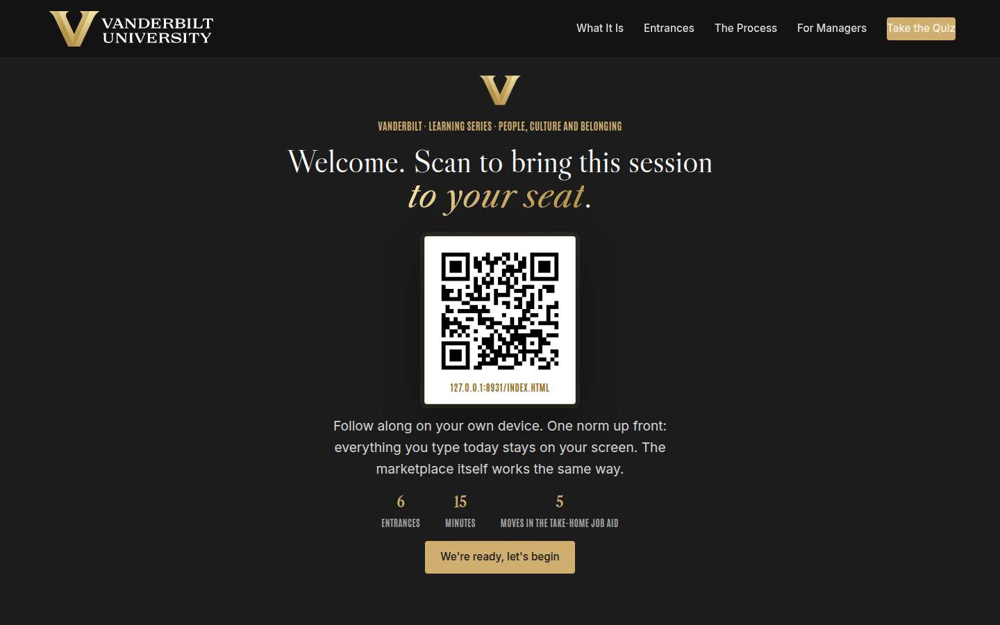
Welcome / QR Full 1 min · Core 1
Get everyone into the experience fast and set the privacy norm.
Say
“Welcome. Scan the code. One rule: everything you type today stays on your screen, and the portal itself works the same way. Fifteen minutes, one first move.”
Do
- Slide up as people arrive; phones up before you talk.
- State the privacy norm once.
Validate: Most of the room has the deck open.
Watch for: Long welcomes. You have fifteen minutes; start.
Transition: “Here's what you'll leave able to do.”
Core path: Core: scan prompt and the norm, twenty seconds.
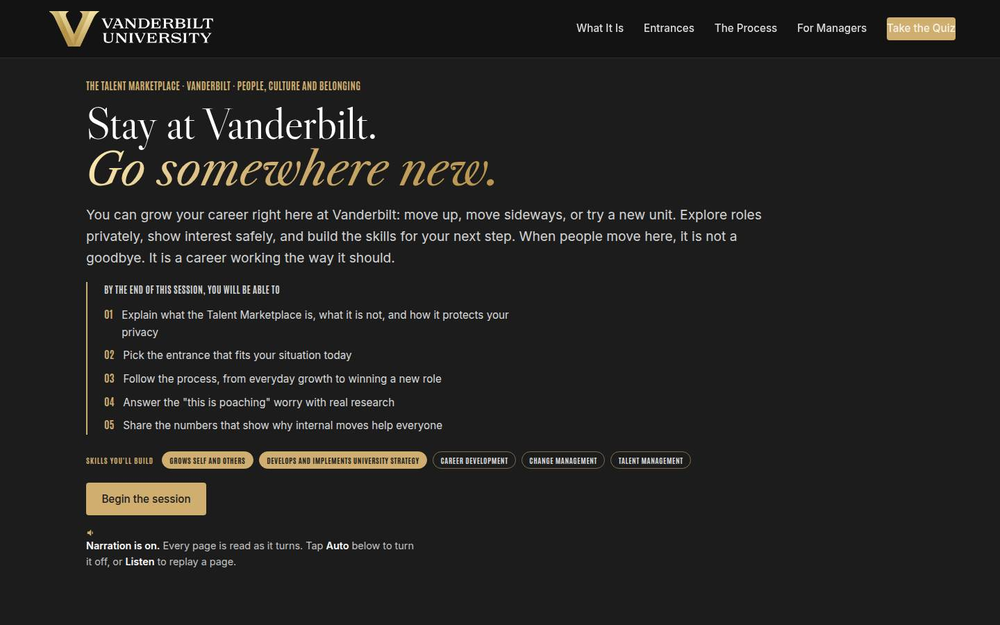
Objectives Full 1 min · Core skip
Set the contract in one breath.
Say
“Five things in fifteen minutes: what the portal is and what it guarantees, your entrance, the process, the manager conversation, and the numbers. Growth here means upward or lateral, inside your unit or across into another, and moving is a normal part of a Vanderbilt career. It ends with a five-move job aid you take with you.”
Do
- Paraphrase the objectives in one breath.
- Name the anchors once: powered by Oracle, built by People, Culture and Belonging.
Validate: None needed.
Watch for: Reading the list verbatim; paraphrase it.
Transition: “First, what it actually is.”
Core path: Core: skip; the deck carries it.
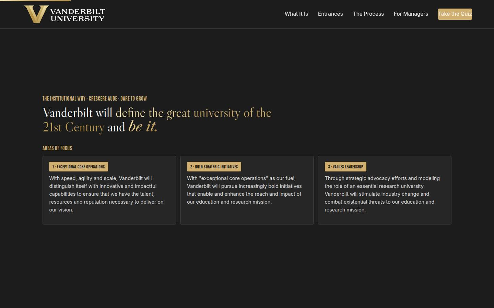
The chancellor's charge Full 1 min · Core skip
Tie the portal to the institutional vision: dare to grow.
Say
“One page of why. The Chancellor's charge is to define the great university of the 21st century and be it, at uncommon speed, agility, and scale. Our motto is the dare, Crescere aude, dare to grow. The Transfer Portal is that dare applied to careers: a university that dares to grow needs people who can.”
Do
- One breath on the vision; land Crescere aude, dare to grow.
- Connect it: a university that dares to grow needs people who can.
Validate: None needed.
Watch for: Lingering; this is context, and the course lives in the pages ahead.
Transition: “So here is what it actually is.”
Core path: Core: skip; the deck carries it.
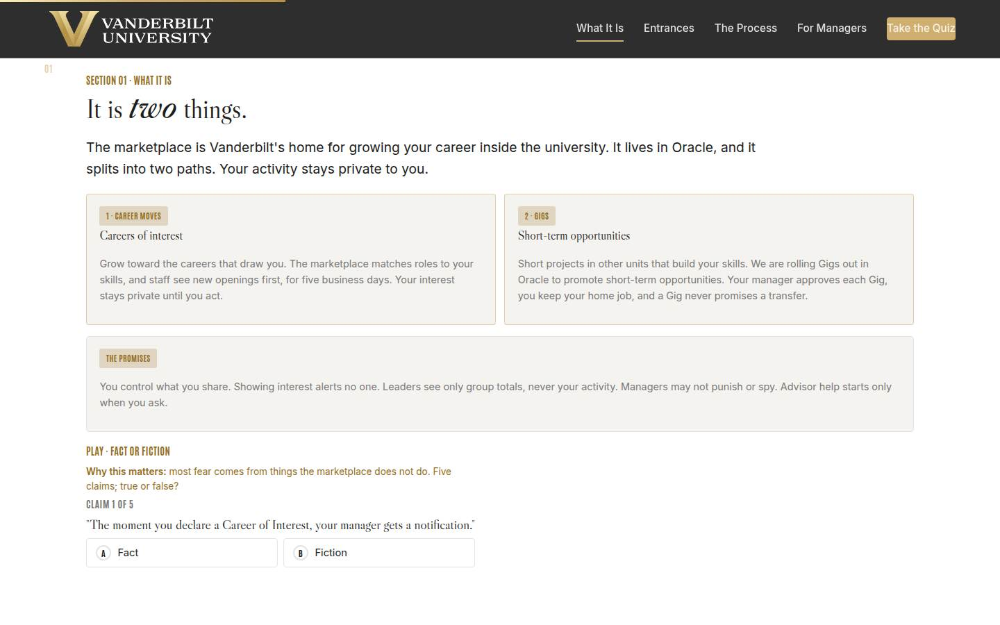
01 · What it is Full 1 min · Core 1
Install the accurate model and dissolve the folklore.
Say
“The portal rests on three connected pieces. One: an open, ongoing growth conversation with your manager. Two: a skill map you own, the skills you have and the ones you want to grow, private to you, always. Three: Oracle, where it all runs: learning, declarations, Gigs, and requisitions posted internally first for five business days. Leaders see only aggregate through Workforce Intelligence. Now, five claims about what this thing does. Call fact or fiction.”
Do
- Walk the three pieces in one breath each; land that they only work together.
- Guarantee cards in one breath each.
- Run Fact or Fiction as a fast room vote, hands for A or B.
Validate: 4+ of 5 on the trainer.
Watch for: Privacy skepticism; point at the mechanics (no notifications, aggregate-only) and move on. If Gigs come up: they have not launched yet, teach the concept and flag that timing is to be announced.
Transition: “Which door is yours? There are six.”
Core path: Core: same minute; the trainer carries it.
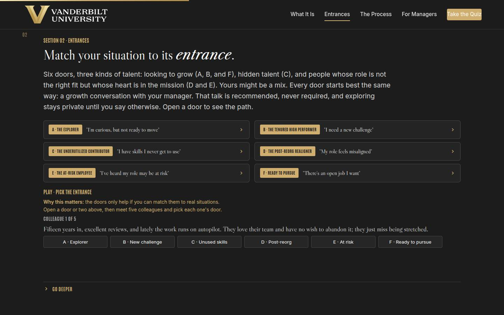
02 · Six entrances Full 2 min · Core 1
Make the portal personal: everyone picks a door.
Say
“Six doors, and they are examples: curious, plateaued, hidden skills, post-reorg, at risk, and ready to apply. Your situation may be a blend or something else entirely. Every door opens best the same way, a growth conversation with your manager, recommended and never required. Tap a door to see one full trail, first conversation to landed move.”
Do
- Open one door and walk its trail; the other five read the same way.
- Name the standing start: every door opens best with the manager conversation, recommended, never required.
- Run Pick the Entrance on devices or as a vote.
- Show of hands, A through F: which is yours?
Validate: Every learner has picked an entrance; it feeds the card.
Watch for: Protect anyone who picked E; nobody reveals that pick.
Transition: “Behind every door, the same process.”
Core path: Core: one door opened, trainer as one vote, hands stay.
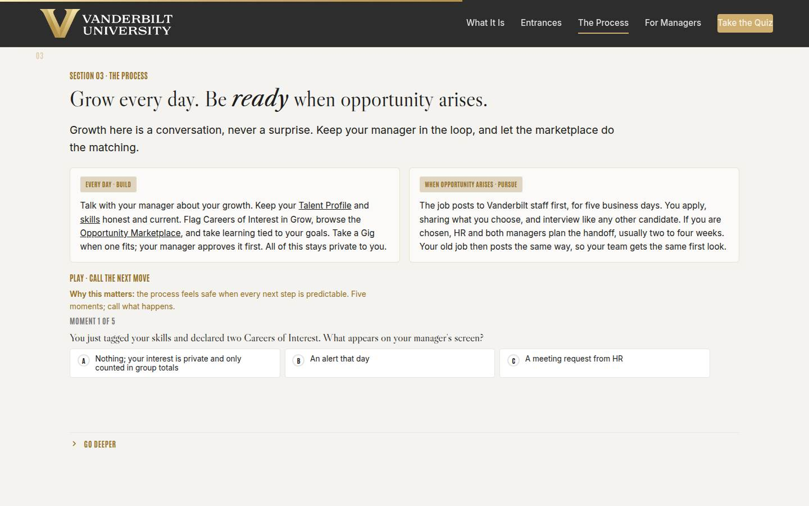
03 · The process Full 2 min · Core 1
Make every step predictable, including disclosure timing.
Say
“Growth here is a conversation, never a surprise. Whatever your goal, keep developing, and keep your manager in the story; nobody should be caught off guard. The portal gives growth two gears. Day to day: profile, Grow plan, learning, the Opportunity Marketplace, optional advisory, with privacy guaranteed when you need it. Then a role opens: it posts internally first, you apply and interview, and if you win it, a coordinated handoff, then your old role backfills through the same portal.”
Do
- Tracks in two breaths.
- Point out the live Oracle links: Talent Profile, Skills Center, Opportunity Marketplace with Opportunity set to Career Roles.
- Run Call the Next Move as a fast vote.
Validate: 4+ of 5 on the trainer.
Watch for: The 'guaranteed job' misread: the window guarantees first look, the interview is yours to win. If privacy versus openness comes up: both are true, the conversation is the culture and the privacy is the guarantee. And the Gig caveat if asked: Gigs are still to launch, and a Gig needs the manager's approval, so it is never invisible to them.
Transition: “Now the section that decides whether any of this works.”
Core path: Core: tracks in one breath each, trainer as one vote.
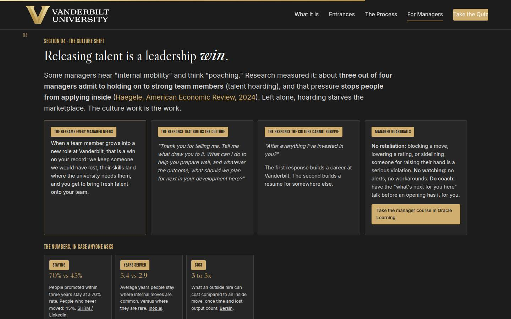
04 · The culture shift Full 3 min · Core 2
The center of gravity: hoarding named, reframe installed, response drilled.
Say
“Some managers hear internal mobility and think poaching. It's been measured: about three quarters of managers admit to talent hoarding, and hoarding deters internal applications without stopping external ones. So the real choice is lose them to the third floor with a handoff and a backfill, or lose them to another employer with two weeks' notice. The whole culture turns on one response: thank you for telling me.”
Do
- Land the 75% stat and let it sit a beat.
- Read both script cards aloud; pause after the bad one.
- Run Judge the Response; it IS the section.
- Point managers at the Oracle Learning course link in the guardrails card for the deeper dive.
Validate: 4+ of 5 on the trainer; the room can tell hoarding from a guardrail violation.
Watch for: Manager shame; keep it structural (incentives, not villains) and land the backfill cascade.
Transition: “For the meeting where you need ammunition, the numbers.”
Core path: Core: stat, both script cards, trainer. Nothing else, and never less.
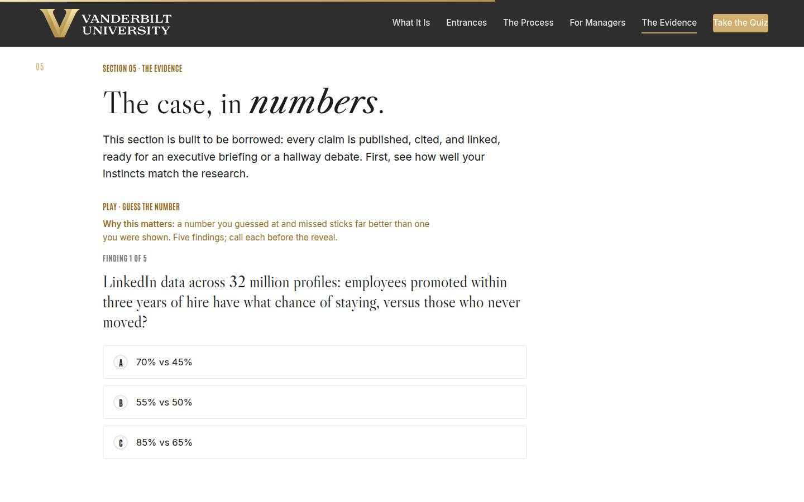
05 · The evidence Full 1 min · Core 1
Arm everyone with two citable numbers.
Say
“Every number on this page is linked to its source: seventy percent versus forty-five retention, five point four versus two point nine years of tenure, twenty to twenty-five percent faster to full speed, three to five times the cost to hire outside. Steal this slide for your next leadership meeting.”
Do
- Point at two tiles, not six.
- Run Guess the Number if the room is ahead of schedule; otherwise assign it as the follow-up.
Validate: Learners can quote two numbers with a source.
Watch for: Methodology debates; the case is convergence, park the rest.
Transition: “Quiz, then your card.”
Core path: Core: two tiles, no trainer.
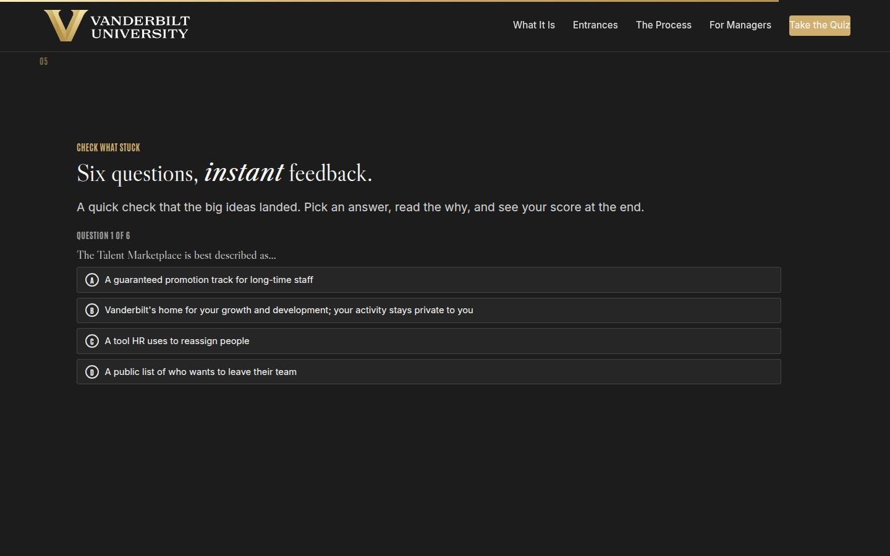
Recap quiz Full 1 min · Core 1
Score the knowledge (Level 2) before the commitment.
Say
“Six questions, fast. This is the systems check before the card.”
Do
- Run it on devices; hands for 5 or better.
- Thirty-second reteach on anything the room missed.
Validate: Room mode at 5/6 or better.
Watch for: Racing; it's a check, not a contest.
Transition: “Now the part you take with you.”
Core path: Core: keep; it's one minute.
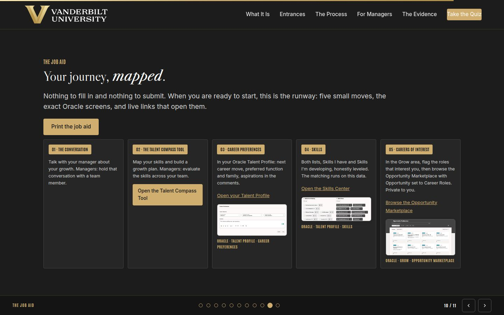
Job aid · Five moves Full 1 min · Core 1
Send everyone out with the five-move runway and the exact Oracle screens.
Say
“Nothing to fill in and nothing to submit. This is the job aid: five small moves, each on a real Oracle screen, with live links that open them. Move one is the growth conversation; the rest live in Oracle. Print it from the button right here, and the quick reference card carries the rest home.”
Do
- Walk the five moves left to right; point at the screenshots and the live links.
- Name move one as the through-line: the growth conversation.
- Point at the Print the job aid button for the take-home.
Validate: Learners know where the job aid lives and can name the move they'd take first.
Watch for: Turning this into a planning exercise; the course educates, the moves come later.
Transition: “Last slide.”
Core path: Core: point at the five moves and the links; done.
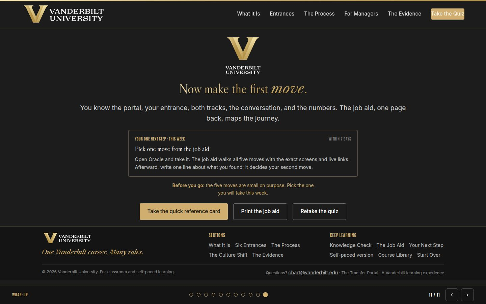
Closing · commitment Full 1 min · Core 1
Spoken commitments (Level 1 + the Level 3 seed), then out.
Say
“One breath: private by default, competitive by design, six doors, two tracks, and thank you for telling me. Pick your move from the job aid and say it out loud; spoken commitments stick.”
Do
- Fist to five, quick scan.
- Popcorn round: which of the five moves will you take first?
- Tell them the 7-day pulse is coming, and stop on time.
Validate: A majority can name the move they will take first.
Watch for: Running long; the ending IS the punctuality.
Transition: “Go make the move.”
Core path: Core: fist to five and three voices; done.
Generated from facilitator/notes.json. The on-screen facilitator edition lives at ./ alongside this guide.